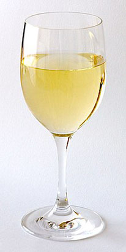

White wine

White wine is a wine that is fermented without skin contact. The colour can be straw-yellow, yellow-green, or yellow-gold. It is produced by the alcoholic fermentation of the non-coloured pulp of grapes, which may have a skin of any colour. White wine has existed for at least 4,000 years.
The wide variety of white wines comes from the large number of varieties, methods of winemaking, and ratios of residual sugar. White wine is mainly from "white" grapes, which are green or yellow in colour, such as the Chardonnay, Sauvignon blanc and Riesling. Some white wine is also made from grapes with coloured skin, provided that the obtained wort is not stained. Pinot noir, for example, is commonly used to produce champagne.
Among the many types of white wine, dry white wine is the most common. More or less aromatic and tangy, it is derived from the complete fermentation of the wort. Sweet wines, on the other hand, are produced by interrupting the fermentation before all the grape sugars are converted into alcohol; this is called Mutage or fortification. The methods of enriching wort with sugar are multiple: on-ripening on the vine, passerillage (straining), or the use of noble rot. Sparkling wines, which are mostly white, are wines where the carbon dioxide from the fermentation is kept dissolved in the wine and becomes gas when the bottle is opened.
White wines are often used as an apéritif before a meal, with dessert, or as a refreshing drink between meals. White wines are often considered more refreshing and lighter in both style and taste than the majority of their red wine counterparts. Due to their acidity, aroma and ability to soften meat and deglaze cooking juices, white wines are often used in cooking.
Varieties
The most widely planted white grape varieties are: Airén, Chardonnay, Sauvignon Blanc, Trebbiano Toscano, Pinot gris, Grenache gris, Riesling, Rkatsiteli, Macabeo, Cayetana Blanca, Muscat of Alexandria, Muscat Blanc, etc.
Winemaking
In general, the winemaking process of white wines is pretty similar to one of red. The stages are the same, however, there are significant differences in the details. Furthermore, producers are always experimenting.
White wine is made from white or black grapes (but always with white flesh, the grapes with coloured flesh are called Teinturier meaning coloured juice). Once harvested, the grapes are pressed and only the juice is extracted which is called wort. The wort is put into tanks for fermentation where sugar is transformed into alcohol by yeast present on the grapes.
Grape harvesting
A harvesting machine that empties its harvest in the yellow bucket into an orange trailer hitched to a tractor. It is white grapes flowing from one of the buckets. The grass around the vines is high and yellowed by drought but the vines are still green, although showing some yellowing, a sign of change from summer to autumn.
Grape maturity depends on the requirement of the final product. For a sweet white wine, whether fortified or natural, sugar is the key criterion. For a dry white wine, technological maturity is calculated and the fruit is harvested just before (usually eight days) the maturity of the sugar. At this point the relationship between sugar and acid is optimal. Further, low acidity will cause the future wine to be unbalanced with excess alcohol and lack of liveliness. In addition, the flavour will be less fresh and less vivid.
Traditional hand harvesting of whole bunches has been increasingly challenged by the harvesting machine for dry white wines, an economic choice but not always a qualitative one. The fragility of the grape requires either a rapid transfer to the Winery, or protection from oxidation. When the transport time between vine and winery is long, the harvest can be refrigerated and kept away from oxygen using nitrogen or dry ice.
However, for some sweet wines, a successful harvest requires manual work and training for pickers to pick only clusters where the berries have reached optimum ripeness or have been affected by noble rot (for the Sélection de Grains Nobles). For sparkling wines hand picking is recommended and it is absolutely necessary for white wines from grapes with coloured skin.
Treatments before fermentation
Colour photo showing an Italian winemaker emptying perforated crates of white grapes into a de-stemmer. The berries are evacuated to the press and stalks fall to the front in a crate. In the background are stainless steel tanks used for fermentation.
The first step in processing the grapes at the winery is to separate the components of the wort that are needed from the unwanted parts. The process followed at this stage will largely determine the future quality of the wine. For this, the clusters are generally shaken then trampled. The practice of moderate trampling allows the grains to burst, releasing the juice and pulp (it cannot be used for white wine from black grapes as the premature bursting of the berries would cause a coloured must). The practice of shaking or stalking has the advantage of separating the stems from the cluster of grapes and avoids giving the wine a herbaceous taste at pressing. The skin is not macerated and the transparent yellow colour is retained.
The winemaker can soak the skins of white grapes and practice maceration if the quality of the grapes is good. Pre-fermentation Maceration is generally performed at a controlled temperature to delay the onset of fermentation. This technique improves the extraction of varietal aromas and their precursors which are mainly located in the skin. Acidity decreases as does the ratio of Colloids (large pectin type molecules) and aging potential. To be implemented, this process requires a perfect de-stalking, moderate crushing and sulphite to protect the wort from oxidation. The duration (typically 5 to 18 hours at 18 °C) depends on the variety, the temperature of maceration, the maturity of the grape, and the quality of the soil.
Colour photo showing a battery of five screw presses in a cooperative. Above, an endless stainless steel screw used to bring the harvest in the press. The selection of each unit is done by means of an automatic door. The winery is very clean: white walls, machines and media access in painted steel and concrete floor gallery and coated with a washable paint.
The trampled and de-stemmed harvest is then pressed. The type of wine press also affects the potential quality of the wine. Since the 1980s, pneumatic presses have improved the work involved by working in airtight conditions and allowing a fine control of the pressure to extract the juice without damaging the grapes. The juice or moût de goutte (Must of Drops) is the juice that flows naturally from the berries crushed under their own weight prior to pressing (on the way to the press). Trampling increases its proportion and makes the material profitable by processing a higher tonnage of grapes in the same time. The moût de presse (Must of the Press) is the juice flowing from the press from the pressure on the grapes. It concentrates the qualities or the defects of the grape: it is rich in aromas, colloids, or phenolic compounds. However, it can also be marked by olfactory defects, such as the smell of fungus on spoiled grapes or the vegetable smell of a harvest with insufficient maturity. The blending or not of the moût de goutte and the moût de presse musts and release depends on the health of the grapes, the method of pressing, and the style of wine intended. Manipulation of the grape before pressing increases the amount of lees and complicates pressing. For the development of a quality wine, their use is excluded or very limited.
Settling
The settling is intended to clarify the wort by removing the lees from it. The lees are colloids in suspension, debris from the skins or pulp, and exogenous debris (soil).
Static settling consists of leaving the must to let the debris settle: after pressing, the must is left to stand in a tank away from air. Suspended particles precipitate to the bottom of the tank. This is facilitated by the addition of pectolytic enzymes which are long chain carbons composed of pectic compounds. These pectins give a high viscosity to the juice, cut the suspended particles into shorter chains, and accelerate precipitation. Refrigeration of the wort is needed: if the fermentation starts, the release of bubbles of carbon dioxide would spread suspended particles throughout the wort preventing their deposition. After the wort is clarified it is decanted for fermenting.
Dynamic settling is performed with a machine that accelerates the separation of the wort from the lees. The centrifuge removes the largest particles but does not achieve a high level of clarity.
Settling by flotation is a technique where the introduction of a gas at the bottom of the tank creates bubbles which cause the particles to rise to the surface where they are removed by a scraper. Filtration with a rotary vacuum filter is relatively slow but effective. It is often used to recover clear wort in the lees exiting the centrifuge.
In addition enzyme treatment can improve the settling of the Finings. Bentonite plays a mechanical role of ballast to settle the colloids – it accelerates the sedimentation rate. Gelatin is also used to flocculate the suspended tannins extracted by the press. Often associated with a bitter taste, their removal is generally beneficial for white wine. Polyvinylpolypyrrolidone or "PVPP" allows the fixing of polyphenols and eliminating them. These molecules are responsible for the browning of wine and their removal gives an element of stability in the future drink.
In the "stabilisation of lees" (liquid cold stabilization) the winemaker regularly adds lees in suspension for several days so they do not settle immediately. Then he proceeds to a conventional settling as indicated above. This technique allows the enrichment of the wort with precursors of "thiol" (passion fruit, citrus ...) which are naturally very soluble in the wort and are particularly suitable for some varieties such as Sauvignon and Colombard. In the "maceration of lees", the lees from the static settling are gathered in a refrigerated tank and agitated for several days. After filtration and fermentation they give a white wine also rich in thiols.
Making of the wine
Colour photo showing stainless steel fermentation tanks in the UK. The tanks are located on both sides of an aisle at the bottom of which oak barrels for aging, stacked on a bracket against the wall can be seen. The floor is painted and pitched to a drainage channel in the middle of the winery.
The wort is then placed in a tank to undergo fermentation. These fermentation tanks can be of several types: oak, cement coated with epoxy, stainless or enamelled steel, or epoxy resin. For large volume tanks the control of temperature, which typically is around 18 °C, becomes necessary. The majority of aromatic components (acetates of alcohol and ethyl esters of fatty acids) are synthesized by the yeast during fermentation of light juice below 18 °C. However, clarity and low temperatures are factors which slow fermentation. Recourse to the addition of selected yeasts for these difficult working conditions becomes crucial. In contrast some producers grow their vines organically or biodynamically: the lees are of good quality without synthetic chemicals harmful to yeast so they are kept in the wine. Turbidity of the must ensures a good supply of yeasts and fermentation in small tanks or in barrels then does not require mastery of cold.
Fermentation starts spontaneously under the action of the natural yeasts from the grapes. The winemaker can choose to use a commercially available active dry yeast. It can help to express the characteristics of a variety or a method of manufacture. For a dry white wine fermentation continues until the sugar runs out. The wine is then usually decanted to eliminate the lees. When fermentation is done in barrels the temperature often exceeds 20 °C or even 25 °C.
After the end of fermentation, the wine may also have malolactic fermentation or FML. This second fermentation carried out by bacteria deacidifies the wine: it transforms the malic acid, which has two carboxyl groups, into lactic acid. This operation, which reduces the biting acidity of the wine, is not always desirable nor practiced. In southern areas the acidity is carefully preserved to give the wine its liveliness for refreshing Aroma of wine. During the fermentation of the grapes varietal aromas are reduced in favour of an increase in roundness and volume in the mouth of the wine during ageing in oak barrels. It gives a better biological stability in champagne wines.
For a sweet wine, fermentation is stopped before its end to keep some of the sugar: this is the Mutage (fortification). The fermentation can be stopped by adding Sulphur Dioxide (SO2) (sterilisation of wine), by sudden cooling (anaesthesia of yeasts), by sterile filtration (capturing the yeasts in a very fine mesh filter), or a combination of several of these methods. A rule of thumb for determining the point of mutage, which allows a good balance of acquired alcohol and residual sugar, is to leave as many potential degrees as the degrees acquired over 10% by volume.[N 4] For sweeter dessert wines fermentation stops spontaneously by excess sugar and alcohol: Alcohol is waste from the yeast and it is poisonous in large doses. In the case of sweet wines an addition of wine alcohol stops the fermentation. FML is not done for sweet wines as the lactic bacteria preferentially degrades sugar which would give a lactic bite (sweet and sour wine). In addition, the balance of acidity and sugar in the wine supports vivacity.
A winemaking technique called "reducing" or "technology" has been developed. Very fashionable in Australia and New Zealand, this technique seeks highly aromatic white wines and is very interesting on aromatic varieties such as Sauvignon B, Colombard B, and Riesling B, although less so for varieties such as Chardonnay B. It works by limiting Premature oxidation in the must or the wine at all stages of development. The use of inert gases such as Carbon Dioxide (CO2) isolates the grapes from oxygen from the air and cold partially inhibits the action of oxidative enzymes in the must. Tyrosinase, a natural enzyme in the grape, and laccase, an enzyme coming from the gray mold are very active in oxidation. Laccase can be eliminated by sorting the grapes. Strong limitation on the amount of polyphenols in the wine by reducing the time between harvest and pressing is another technique that aims to make a very light wine, protected from yellowing.
Maturing
Maturing can be done in a vat. It takes little time to clarify and to prepare the packaging (bottling or Bag-In-Box) but this may be extended by maturing of lees. This type of maturing consists of regularly adding fine lees in suspension in the wine. The dead yeast is used for the fine lees which digests itself (autolysis) giving the wine volume and body to support the fruitiness. This operation is called Bâtonnage or stirring and is traditionally done with a stick to agitate the lees at the bottom of the barrel. This technique needs to be well controlled, however, otherwise the wine may take on a Goût de réduit (Reduced taste) due to the activity of reductase sulphite from the yeast. This operation can be done in vats, as in Muscadet, barrels as in Burgundy and many chardonnays, or bottles as in champagne.
Maturing can also be done in barrels. The wine is put in barrels after fermentation but fermentation itself may also occur in the barrel. The barrel has a dual role: it flavours the wine giving it a scent of toast, butter, and vanilla but it also helps to mature it by providing a very small regular quantity of oxygen through the wooden walls. This oxygen helps to polymerize the components of the wine making it less aggressive and more balanced.
Blending
The blending consists of mixing different wines in order to obtain the desired final blend. This assembly can be of varietals (in the case of Bordeaux wines or wines from the Languedoc-Roussillon), or blending of a vintage with varieties (in the case of champagne).
This blending may be purely quantitative: various vintages can be blended to achieve the desired volume. It can also be qualitative; the taster or a team of tasters (cellar master, winemaker, owner of the estate, etc.) determine the amount of each wine to mix together in the final blend to obtain optimum quality. In winemaking blending is always empirical, it cannot be predicted that the combination of two or more vintages will give the expected product. The only secure values are analytical values (alcoholic strength, acidity, pH, etc.).
Clarification
Colour photo showing the deposit of lees in barrel through a transparent bottom. Lees looks like a layer of mud a few millimetres thick of a creamy white colour. The light that passes through the wine is still cloudy suggesting that light should be placed against another background. The barrel rests on metal industrial shelving.
Clarification consists of removing insoluble particles in suspension in the water-alcohol solution that is the wine and stabilization is to maintain the solubility of the elements dissolved in the wine throughout the retention period in the bottle and consumption at the table.
To clarify wine, it is necessary to wait for particle deposition at the bottom of the wine container but this can be accelerated by the use of oenological adhesives. These additives bind to the insoluble particles and fall to the bottom.
Tannic acid (or gallotannic) C76-H52-O46 is used for the clarification of white wine, using casein, gelatin, or Isinglass.
Stabilisation
The majority of wine components are dissolved in the wine: certain components, however, may take an insoluble form during ageing or storage of wine – this is the case with tartaric acid. A salt containing potassium, potassium bitartrate is in the form of crystals at the bottom of the bottle. This is a natural phenomenon but many producers seek to avoid this as dealers and uninformed consumers take these crystals as a fault. It is caused or accelerated by cold storage: low temperature reduces its solubility. The habit of refreshing white wine makes this wine particularly sensitive to this phenomenon.
Several solutions are available to stabilize the wine:
The first is to cool the wine to a negative temperature near freezing for several weeks.[N 5] The potassium bitartrate crystals precipitate and can be removed by filtration prior to packaging in bottles or bag-in-boxes. This solution is costly in refrigeration energy and can negatively affect the organoleptic qualities of the wine.
Another solution is to introduce Metatartaric acid, a tartaric acid polymer, into the wine. Its mode of action is still unknown but it prevents microscopic crystals from growing. However, the effect is not sustainable in the long term (between 6 and 18 months) because it hydrolyzes when warm.
A third way is electrodialysis: an electric current between two plates attracts the wine ions and eliminates them. However, this solution not only acts on tartaric acid but also other compounds especially potassium which is responsible for the formation of insoluble bitartrate and also modifies the organoleptic qualities. However, it does allow a definitive stabilization. Reports of high tartaric stability in white wines matured on lees has led to research in this area. A protein from the hydrolyzate of the yeast (mannoproteins) allows salts of tartar to keep their solubility. The addition of this compound industrially permits a good quality stabilization. This solution is the least expensive for energy and refrigeration equipment and does not alter the aromatic perception of wine. Nevertheless, tests conducted by the Cooperative Institute for Wine of Languedoc-Roussillon did not show conclusive effectiveness.
Finally the study of the addition of cellulose gum or carboxymethylcellulose (CMC) conducted in recent years led to its approval in 2009 (EC Regulation 606/2009).
Some producers who sell their own products directly to the consumer, explain these natural phenomena to the customer who then serve the wine gently in order to prevent the crystals forming in the bottom of the bottle.
The presence of unstable proteins that can create a visual problem (protein breakdown) in the wine also requires stabilization. Treatment with bentonite allows the precipitation of unstable proteins which can then be removed by filtration and extraction. The proteins can also react with Metatartaric acid added to wine to prevent tartaric precipitation: the wine then loses its shine and becomes opalescent like whey. Some varieties are naturally high in protein (muscat. ..) but levels also vary depending on the vintage and maturity levels.
Finally some white wines can be victims of Rosissement (pinking). This phenomenon manifests itself in a light rosé colouration of the wine and takes the appearance of a "stained" wine or one that is contaminated by the presence of anthocyanins from red wine. Yet this is not so: the phenomenon is due to the presence of a normally colourless dissolved polyphenol which turns pink due to oxidation. An infusion of PVPP generally eliminates the substrate of oxidation. Some varieties are particularly sensitive to pinking: Sauvignon B, Viognier, Grenache B...
Use of SO2
SO2, sulphur dioxide or dioxide of sulphur is used in all winemaking operations from harvesting to packaging. It plays a protective role in the wine against the phenomena of oxidation, oxidase enzyme action (enzymes that oxidize the polyphenols in wine), and the control of microbial populations in yeasts and bacteria (antiseptic effect).
The maximum allowable doses depend on the sugar content of the wine: the residual sugar is susceptible to attack by microorganisms which would cause a restart of fermentation. In France the dose is limited to 150 mg/litre for Vin de Pays (country wines), 185 mg/l for Sparkling wines, 200 mg/l for Fortified wines, 200 mg/l for dry white wines, 250 mg/l for white wines with residual sugar greater than 5 g/litre (Moelleux wines), and 300 mg/l for liquoreux sweet wines.
Filtration and conditioning
For sale to individuals or restaurants the wine is filtered if necessary, then conditioned. The filtration consists of passing the wine through a filter element for retaining fine particles suspended in the wine. It may be fine earth (Kieselguhr), cardboard sheets, membranes, or Cross-flow filtration.
Packaging wine has historically varied. In one early method, wine merchants kept their stock in barrels or casks and the client would fill their pitcher or bottle. Glass bottles revolutionized the wine industry. The absence of transfer and thus contact with the oxygen in the air has made a significant improvement to the quality of the product. Other containers have emerged: aluminum cans, Tetra Pak cartons, plastic bottles, and the bag-in-box. Their quality is in their chemical inertness in relation to wine and their hermetic character against oxygen.
The wine bottle has been given certain shapes dedicated to wine. The most emblematic is the bottle of sparkling wine: because of the pressure inside it is a fairly thick glass. Many countries have adopted this shape for bottles of white wine – a more streamlined form than red wine bottles.